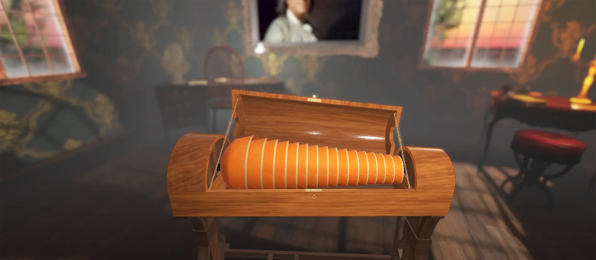
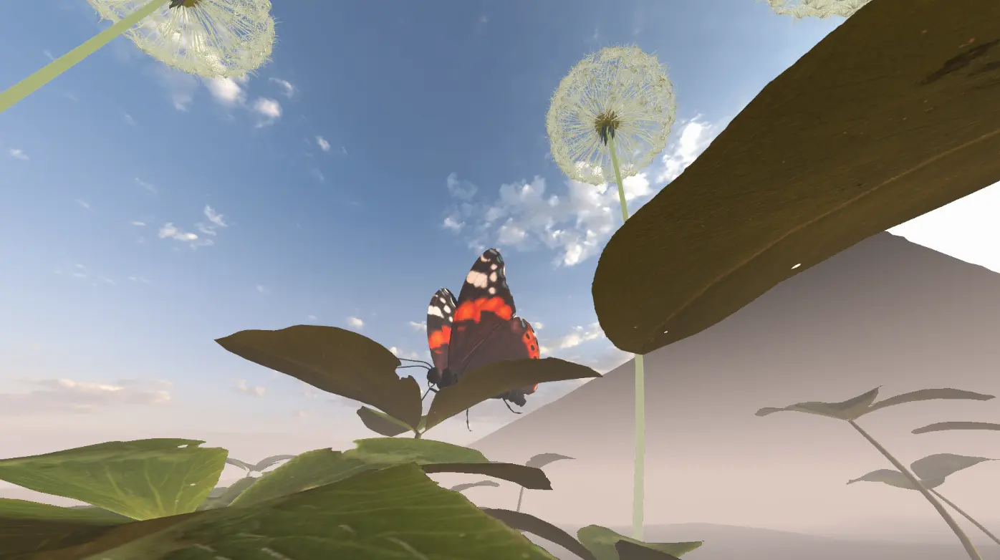
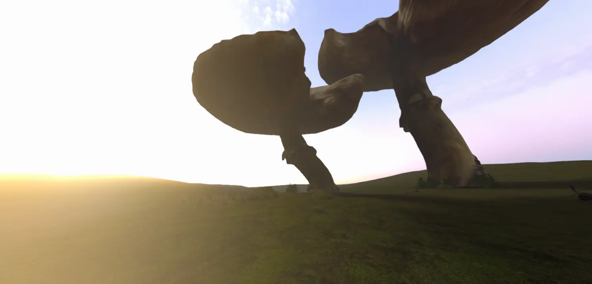
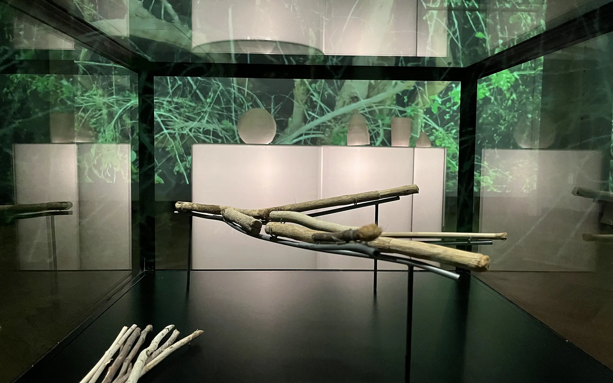

Projects








I'm just Morten. I hold a master’s degree in Medialogy, specializing in Human-Computer Interaction. I have a passion for creating cohesive, engaging, and user-centered experiences across digital platforms, with hands-on experience in end-to-end design processes for clients like the Danish National Museum and Gehl Architects, where iterative, data-driven workflows were essential. Whether I'm working creatively with code or developing immersive virtual reality experiences, I find that being detail-oriented is one of my key strengths. I approach each project with curiosity and a tech-agnostic mindset, always open to finding the best tools and methods to bring ideas to life in ways that bring value to the end user.